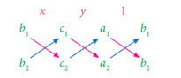
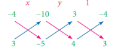
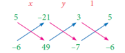
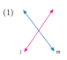
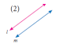
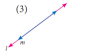
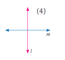
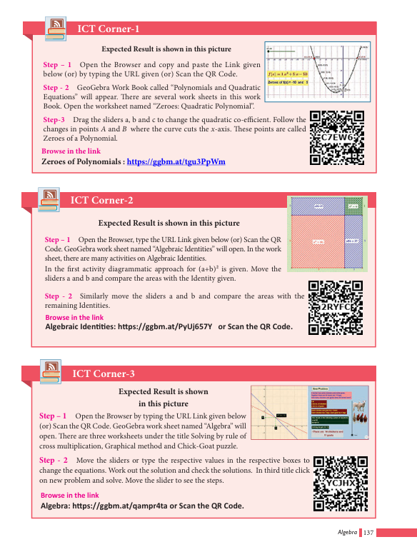

Exercise 3.11
1.Solve, using the method of substitution
(i) 2x-3y=7;5x+y=9
(ii) 1.5x+0.1y=6.2;3x-0.4y=11.2
(iii) 10% of x+20% of y=24;3x-y=20
(iv) √2x-√3y=1;√3x-√8y=0
.2x minus 3y equal 7 ; 5x plus y equal 9
1.5 x plus 0.1y equal 6.2 ; 3x minus 0.4 y equal 11.2
10% of x plus 20% of y equal 24; 3x minus y equal 20
root 2 x minus root 3 y equal 1; root 3 x minus root 8 y equal 0
ANSWER.(i) (2, −1) (ii) (4,2) (iii) (40,100) (iv) (√8, √3)
2.Raman’s age is three times the sum of the ages of his two sons. After 5 years his age will be twice the sum of the ages of his two sons. Find the age of Raman.
ANSWER 45
3.The middle digit of a number between 100 and 1000 is zero and the sum of the other digit is 13. If the digits are reversed, the number so formed exceeds the original number by 495. Find the number.
ANSWER 409
Solving by Elimination Method Th is another algebraic method for solving a pair of linear equations. Th is method is more convenient than the substitution method. Here we eliminate (i.e., remove) one of the two variables in a pair of linear equations, so as to get a linear equation in one variable which can be solved easily.
The various steps involved in the technique are given below:
Step 1: Multiply one or both of the equations by a suitable number(s) so that either the coefficients of first variable or the coefficients of second variable in both the equations become numerically equal.
Step 2: Add both the equations or subtract one equation from the other, as obtained in step 1, so that the terms with equal numerical coefficients cancel mutually.
Step 3: Solve the resulting equation to find the value of one of the unknowns.
Step 4: Substitute this value in any of the two given equations and find the value of the other unknown.
Example 3.50
Given 4a+3b=65 and a+2b =35 solve by elimination method.
4a plus 3b is equal to 65. equation 1
a plus 2b is equal to 35. equation 2
Solution
Verification :
4a+3b = 65...(1)
4(5)+3(15) = 65
20 + 45 = 65
65 = 65 True
a + 2b = 35...(2)
5 + 2(15) = 35
5+30 = 35
35 = 35 True
Given, 4a+3b=65 .....(1 )
a+2b = 35.....(2 )
4a plus 3b is equal to 65. equation 1
a plus 2b is equal to 35. Equation 2
(2) × 4 gives 4a + 8b = 140
(–) (–) (–)
Already (1) is 4a + 3b = 65
5b = 75 which gives b = 15 Put b = 15 in (2):
a + 2(15) = 35 which simplifies to a = 5.
Thus, the solution is a = 5, b = 15.
a value 5, b value 15. 4a plus 3b is equal to 65. Substitute we get
65 equal 65 true
Example 3.51 Solve for x and y: 8x-3y=5xy, 6x-5y=-2xy by the method of elimination.
Solution
The given system of equations are 8x+3y=5xy...(1)
6x-5y=-2xy...(2)
8x minus 3y equal 5 x y. equation 1
6x minus 5y equal minus 2xy equation 2
Observe that the given system is not linear because of the occurrence of xy term. Also note that if x =0, then y =0 and vice versa. So, (0,0) is a solution for the system and any other solution would have both x≠0 and y≠0.
Let us take up the case where x≠0 y≠0.
Dividing both sides of each equation by xy,
8x/xy-3y/xy= 5xy/xy we get, 8/y- 3/x= 5...(3)
6x/xy-5y/xy=-2xy/xy 6/y- 5/x=-2...(4)
Let a=1/ x, b=1/ y.
(3)&(4) respectively become, 8b-3a=5...(5)
6b-5a=-2...(6)
which are linear equations in a and b.
To eliminate a, we have, (5) X5 40b-15a=25.....(7)
(6)X3 18b-15a=-6.....(8)
Now proceed as in the previous example to get the solution (11/23,22/23).
Thus, the system have two solutions (11/23,22/23)and (0,0).
open bracket 11 by 23 comma 22 by 31 close bracket and open bracket 0 comma 0 close bracket
Exercise 3.12
1.Solve by the method of elimination
(i) 2x–y = 3; 3x + y = 7 (ii) x–y = 5; 3x + 2y = 25
(iii) x/10+y/5=14;x/8+y/6=15 (iv) 3(2x+y)=7xy;3(x+3y)=11xy
(v) 4/x+5y=7 ;3/x+4y=5 (vi) 13x+11y=70;11x+13y=74
6 Bracket 13x plus 11y equal 7 0; 11x plus 3 y equal 74
ANSWERS 1.(i) (2,1) (ii) (7,2) (iii) (80,30) (iv) (1, 3/2)
(v) (1/3, 1) (vi) (2,4)
2.The monthly income of A and B are in the ratio 3:4 and their monthly expenditures are in the ratio 5:7. If each saves ₹ 5,000 per month, find the monthly income of each.
ANSWER (2) ₹30000, ₹40000
3.Five years ago, a man was seven times as old as his son, while five year hence, the man will be four times as old as his son. Find their present age.
Solving by Cross Multiplication Method
ANSWER (3) 75, 15
The substitution and elimination methods involves many arithmetic operations, whereas the cross-multiplication method utilize the coefficients effectively, which simplifies the procedure to get the solution. This method of cross multiplication is so called because we draw cross ways between the numbers in the denominators and cross multiply the coefficients along the arrows ahead. Now let us discuss this method as follows:
Suppose we are given a pair of linear simultaneous equations such as
a1x+ b1y- c1=0...(1)
a2x+ b2y- c2=0...(2)
a1 multiply x plus b1 multiply y plus C1 equal 0. ..(1)
a2 multiply x plus b2 multiply y plus C2 equal 0. .. (2)
such that a1/a2 ≠ b1/b2.We can solve them as follows :
(1) × b2 – (2) × b1 gives b2(a1x+ b1y-c1)-b1(a2x+ b2y-c2)=0
X(a1b1-a2b2)=(b1c1-b2c2)
X=( b1c1-b2c2)/( a1b1-a2b2)
(1) × a2 – (2) × a1 similarly can be considered and that will simplify to
Y=( c1a2-c2a1)/( a1b2-a2b1)
Hence the solution for the system is
X=(b1c2-b2c1)/(a1b2-a2b1),
y=(c1a2-c2a1)/(a1b2-a2b1),
This can also be written as
x/b1c2-b2c1=y/c1a2-c2a1=1/a1b2-a2b1
which can be remembered as
a1/a2 ≠ b1/b2 a1 by a2 is not equal to b1 by b2 given a pair of linear simultaneous equations we get solutions x by b 1 c 2 minus b 2 c 1 equal y by c 1 a 2 minus c 2 a 1 equal 1 by a 1 b 2 minus a 2 b 1

Example 3.52 Solve 3x-4y =10 and 4x+3y=5 3x minus 4y equal10 and 4x plus 3y equal 5 by the method of cross multiplication.
Solution
The given system of equations are
3x-4y=10 -> 3x-4y-10= 0.....(1 )
4x+3y=5 -> 4x+3y-5= 0.....(2 )
For the cross-multiplication method, we write the co-efficients as

Verification :
3x–4y = 10...(1)
3(2)–4(–1) = 10
6 + 4 = 10
10 = 10 True
4x + 3y = 5...(2)
4(2) + 3(–1) = 5
8–3 = 5
5 = 5 True
Example 3.52 explanation 3x minus 4y equal10 and 4x plus 3y equal 5 by the method of cross section solution we get x value 2, y value minus 1 verification 5 equal 5
x/(-4)(-5)-(3)(-10)=y/(-10)(4)-(-5)(3)=1/(3)(3)-(4)(-4)
X/(20)-(-30)=y/(-40)-(-15)=1/(9)-(-16)
X/20+30=y/-40+15=1/9+16
x/50=y/-25=1/25
Therefore, we get x = 50/25 ; y = −25/25
x = 2; y = −1
Thus the solution is x = 2, y = –1.
Example 3.53 Solve by cross multiplication method :
3x+5y =21;
-7x-6y =-49
3x plus 5y minus 21 equal 0;
minus7x minus6y plus49 equal 0
Solution
The given system of equations are 3x+5y =21;
-7x-6y =-49
Now using the coefficients for cross multiplication, we get,
Verification :
3x+5y = 21...(1)
3(7)+5(0) = 21
21 + 0 = 21
21 = 21 True
–7x – 6y = –49...(2)
–7(7) – 6(0) = –49
–49 = –49
–49 = –49 True

x/(5)(49)(-6)(-21)=y/(-21)(-7)-(49)(3)=1/(3)(-6)-(-7)(5)
X/119=y/0=1/17
x/ 119= 1/ 17 , y/0 =1 /17
x = 119 /17 , y = 0 /17
x = 7 , y = 0
example 3.53 answer x value 7 and y value 0 checking progress minus 49 equal minus 49
Note
Here y/0= 1/ 17 = is to mean y = 0/ 17. Th us, y/0 is only a notation, and it is not division by zero. It is always true that division by zero is not defined.
Exercise 3.13
1. Solve by cross-multiplication method
(i) 8x-3y=12; 5x= 2y+7 (ii) 6x+7y-11=0; 5x+ 2y=13 (iii) 2/x+ 3/y=5; 3/x- 1/y+ 9= 0.
. 8x- minus 3y =equal 12; 5x equal = 2y plus+7 (ii) 6x plus +7y- minus11 equal= 0; 5x plus+ 2y equal= 13 (iii) 2/ by x plus+ 3 by/y = equal 5; 3/by x- minus1/ by y plus plus+ 9 equal= 0.
2.Akshaya has 2-rupee coins and 5-rupee coins in her purse. If in all she has 80 coins totalling ₹ 220, how many coins of each kind does she have.
3. It takes 24 hours to fill a swimming pool using two pipes. If the pipe of larger diameter is used for 8 hours and the pipe of the smaller diameter is used for 18 hours. Only half of the pool is filled. How long would each pipe take to fill the swimming pool.
Exercise 3.13 SOLUTION
1.(i) (3,4) (ii) (3, −1) (iii) (– ½,1/3)
(2) Number of 2-rupee coins 60; Number of 5 rupee coins 20
(3) Larger pipe 40 hours; Smaller pipe 60 hours
Consider linear equations in two variables say
a1x+ b1y+ c1=0 ...(1) a1 x plus b1 y plus c1 equal 0
a2x+ b2y+ c2=0 ...(2) a2 x plus b2y plus c2 equal o where a1,a2, b1, b2, c1and c2 are real numbers. Then the system has :
(i) a unique solution if a1/a2 ≠b1,b2 (Consistent) a1 by a2 is not equal to b1 by b2
(ii) an Infinite number of solutions if a1/a2= b1/b2= c1/c2 (Consistent) a1 by a2 is equal to b1 by b2 is equal to c1 by c2
(iii) no solution if a1/a2= b1/b2≠ c1/c2(Inconsistent) a1 by a2 is equal to b1 by b2 is not equal to c1 by c2
Example 3.54 Check whether the following system of equation is consistent or inconsistent and say how many solutions we can have if it is consistent.
(i) 2x – 4y = 7 (ii) 4x + y = 3 (iii) 4x +7 = 2 y x – 3y = –2 8x + 2y = 6 2x + 9 = y
2 x minus 4 y equal 7
X minus 3 y equal minus 2
4 X plus y equal 3
8 x plus 2 y equal 6
4 x plus 7 equal 2 y
2 x plus 9 Equal y
S.No |
Pair of lines |
a1/a2 |
b1/b2 |
c1/c2 |
Compare the ratios |
Graphical representation |
Algebraic interpretation |
(i) |
2x–4y = 7 x – 3y = –2 2 x minus 4 y equal 7 X minus 3 y equal minus 2
|
2/1=2 2 by 1 equal 2 |
-4/-3= 4/3 4 by 3 |
7/-2=-7/2 |
a1/a2 ≠b1/b2 a1 by a2 is not equal to b1 by b2 |
Intersecting lines |
Unique solutions |
(ii) |
4x+y = 3 8x +2y =6 4 X plus y equal 3 8 x plus 2 y equal 6
|
4/8= 1/2 |
½ 1 by 2 |
3/6=1/2 |
a1/a2 =b1/b2=c1/c2 |
Coinciding lines |
Infinite many solutions |
(iii) |
4x+7=2y 2x +9=y 2x +9 = y 4 x plus 7 equal 2 y 2 x plus 9 Equal y |
4/2=2 |
2/1=2 2 by 1 equal 2 |
7/9 |
a1/a2 =b1/b2≠c1/c2 |
Parallel lines |
No solutions |
Example 3.55 Check the value of k for which the given system of equations kx+2y=3; 2x-3y =1 has a unique solution.
Solution
Given linear equations are
Kx+2y=3-----------(1)[ a1x+ b1y+ c1=0 ]
2x-3y =1------------(2)[ a2x+ b2y+ c2=0 ]
Here a1=k, b1=2, a2= 2, b2=-3;
For unique solution we take a1/a2 ≠b1,b2; therefore k/2 ≠2/-3; k ≠4/-3 ,
that is k ≠-equal 4/3.
Example 3.56
Find the value of k, for the following system of equation has infinitely many solutions. 2x-3y=7;(k+2)x-2(2k+1)y=3(2k-1)
Solution
Given two linear equations are
2x-3y=7 [a1x+ b1y+ c1=0 ]
(k+2)x-2(2k+1)y=3(2k-1) [a2x+ b2y+ c2=0]
Here a1=2,b1=-3,a2=(k+2),b2=-(2k+1),c1=7,c2=3(2k-1)
For infinite number of solution, we consider a1/a2=b1/b2=c1/c2
2/k+2=-3/-(2k+1)=7/3(2k-1) -3/-(2k+1)=7/3(2k-1)
2/k+2=-3/-(2k+1) 9/(2k-1)=7(2k+1)
4k+2=3k+6 18k-9=14k+7
k = 4 4k=16
k=4
2 x minus 3 y equal 7 k plus 2 multiply x minus 2 k plus 1 multiply y equal 3 multiply 2 k minus 1 are the solutions has many solutions k value 4
Example 3.57 Find the value of k for which the system of linear equations 859x y + = ; kx y += 1015 has no solution.
Solution Given linear equations are
8x+5y=9 [a1x+ b1y+ c1=0 ]
Kx+10y=15 [a2x+ b2y+ c2=0]
Here a1=8,b1=5,a2=9,b2=10,c1=9,c2=15
For no solution, we know that a1/a2= b1/b2≠ c1/c2 and so, 8 /k=5/10≠9/15
80k =5k
k = 16
Given 8 x plus 5 y equal 9 k x plus 10 y equal 15 for the following system of equation has no solution means a1 value 8 and a1 value 8 and a2 value 9 and b1 value 5 and b2 value 10 and c 2 value 15 and c1 value 9 k value found to be 16
Activity-3
1.Find the value of K for the given system of linear equations satisfying the condition below:
(i)2x+ky=1;3x-5y=7 2x plus Ky equal one 3 x minus 5 y equal 7has a unique solution
(ii)Kx+3y=3;12x+ky=6 kx plus 3y equal three 12 x plus k y equal 6 has no solution
(iii)(k-3)x+3y=k;kx+ky=12 k minus 3 x plus 3y equal k kx plus Ky equal 12has infinite number of solution
2.Find the value of a and b for which the given system of linear equation has infinite number of solutions 3x-(a+1)y=2b-1,5X+(1-2a)y=3b
Activity-4
For the given linear equations, find another linear equation satisfying each of the given condition
Given linear equation |
Another linear equation |
||
Unique solutions |
Infinite many solutions |
No solution |
|
2x+plus 3y=7 |
3x+ plus 4y=8 |
4x+ plus 6y=14 |
6x+ plus 9y=15 |
3x- minus 4y=5 |
|
|
|
y-minus4x=2 |
|
|
|
5y- minus 2x=8 |
|
|
|
Exercise 3.14
Solve by any one of the methods
1.The sum of a two-digit number and the number formed by interchanging the digits is 110. If 10 is subtracted from the first number, the new number is 4 more than 5 times the sums of the digits of the first number. Find the first number.
2.The sum of the numerator and denominator of a fraction is 12. If the denominator is increased by 3, the fraction becomes 1/2. Find the fraction.
3.,ABCD is a cyclic quadrilateral such that ∠A = (4y + 20)° , ∠B = (3y –5)° , ∠C =(4x) ° and D = ∠ (7x + 5) °. Find the four angles.
4,ABCD is a cyclic quadrilateral such that ∠A = (4y + 20) °, angle A Equal bracket 4 y plus 20 bracket close Power degree comma ∠B = (3y –5) °, angle b Equal bracket 3 y minus 5 bracket close Power degree comma ∠C = (4x) ° angle c Equal bracket 4 x bracket close Power degree comma and∠ D = (7x + 5) ° angle D Equal bracket 7 X plus 5 bracket close Power degree comma Find the four angles.
4.On selling a T.V. at 5% gain and a fridge at 10% gain, a shopkeeper gains ₹2000. But if he sells the T.V. at 10% gain and the fridge at 5% loss, he gains Rs.1500 on the transaction. Find the actual price of the T.V. and the fridge.
Two numbers are in the ratio 5 : 6. If 8 is subtracted from each of the numbers, the ratio becomes 4 : 5. Find the numbers.
6. Indians and 4 Chinese can do a piece of work in 3 days. While 2 Indians and 5 Chinese can finish it in 4 days. How long would it take for 1 Indian to do it? How long would it take for 1 Chinese to do it?
ANSWERS Exercise 3.14
Exercise 3.14
1. 64
2. 57
3. ∠A=120 °, ∠B= 70°, ∠c = 60°, ∠D = 110°
4. Price of TV = ₹20000; Price of fridge = ₹10000
5. 40, 48
6. 1 Indian – 18 days; 1 Chinese – 36 days
Exercise 3.15
Multiple choice questions
1. If x3 + 6x2 + kx + 6 is exactly divisible by (x + 2), then k= ?
(1) –6
(2) –7
(3) –8
(4) 11
2. The root of the polynomial equation 2x + 3 = 0 is
(1) 31
(2) – 31
(3) – 23
(4) – 32
3. The type of the polynomial 4–3x3 is
(1) constant polynomial
(2) linear polynomial
(3) quadratic polynomial
(4) cubic polynomial.
4. If x51 + 51 is divided by x + 1, then the remainder is
(1) 0
(2) 1
(3) 49
(4) 50
5. Th e zero of the polynomial 2x+5 is
(1) 25
(2) – 25
(3) 52
(4) – 52
6. Th e sum of the polynomials p(x) = x3 – x2 – 2, q(x) = x2–3x+ 1
(1) x3 – 3x – 1
(2) x3 + 2x2 – 1
(3) x3 – 2x2 – 3x
(4) x3 – 2x2 + 3x –1
7. Degree of the polynomial (y3–2)(y3 + 1) is
(1) 9
(2) 2
(3) 3
(4) 6
8. Let the polynomials be
(A) –13q5 + 4q2 + 12q
(B) (x2 +4 )(x2 + 9)
(C) 4q8 – q6 + 2
(D)-5/7y12+ y3+ y5 Then ascending order of their degree is
(1) A,B,D,C
(2) A,B,C,D
(3) B,C,D,A
(4) B,A,C,D
9. If p (a) = 0 then (x-1) is a DASH of p(x)
(1) divisor
(2) quotient
(3) remainder
(4) factor
10. Zeros of (2-3x) is DASH
(1) 3
(2) 2
(3) 2/ 3
(4) 3 /2
11. Which of the following has x -1 as a factor?
(1) 2x-1
(2) 3x-3
(3) 4x-3
(4) 3x-4
12. If x - 3 is a factor of p (x), then the remainder is
(1) 3
(2) –3
(3) p(3)
(4) p(–3)
13. (x+y )(x2-xy+y2 is equal to
(1) (x+y)3
(2) (x-y)3
(3) x3+ y3
(4) x3- y3
14.(a+b-c)2 is equal to DASH
(1) (a-b+ c)2
(2) (-a-b+ c)2
(3) (a+b+ c)2
(4) (a-b- c)2
15.If (x +5)and (x -3) are the factors of ax2+ bx+ c, then values of a, b and c are
(1) 1,2,3
(2) 1,2,15
(3) 1,2, −15
(4) 1, −2,15
16.Cubic polynomial may have maximum of DASH linear factors
(1) 1
(2) 2
(3) 3
(4) 4
17.Degree of the constant polynomial is DASH
(1) 3
(2) 2
(3) 1
(4) 0
19.Find the value of m from the equation 2x+3y= m. If it’s one solution is x = 2 and
y= −2.
(1) 2
(2) −2
(3) 10
(4) 0
20.Which of the following is a linear equation
(1) x+1/ x= 2
(2) x(x-1)=2
(3) 3x+5=2/3
(4) x3-x=5
21.Which of the following is a solution of the equation 2x-y=6
(1) (2,4)
(2) (4,2)
(3) (3, −1)
(4) (0,6)
22.If (2,3) is a solution of linear equation 2x+3y= k then, the value of k is
(1) 12
(2) 6
(3) 0
(4) 13
23.Which condition does not satisfy the linear equation ax+ by+ c= 0
(1) a≠0 , b = 0
(2) a = 0 , b ≠ 0
(3) a = 0 , b = 0 ,
(4)c ≠0 (4) a ≠0 , b ≠0
24.Which of the following is not a linear equation in two variable
(1) ax+ by+ c= 0
(2) 0x+ 0y+ c= 0
(3) 0x+ by+ c= 0
(4) ax+ 0y+ c= 0
25.The value of k for which the pair of linear equations 4x+6y-1=0 and 2x+ky-7=0 represents parallel lines is
(1) k = 3
(2) k = 2
(3) k = 4
(4) k = −3
26.A pair of linear equations has no solution then the graphical representation is




27.If a1/a2≠b1/b2 where a1x+b1y+ c1=0 and a2x+b2y+ c2=0 then the given pair of
linear equation has DASH solution(s)
(1) no solution
(2) two solutions
(3) unique
(4) infinite
28.If a1/a2 =b1/b2 ≠c1/c2 where a1x+b1y+ c1=0 and a2x+b2y+ c2=0 then the given
pair of linear equation has DASH solution(s)
(1) no solution
(2) two solutions
(3) infinite
(4) unique
29.GCD of any two prime numbers is DASH
(1) −1
(2) 0
(3) 1
(4) 2
30.The GCD of x4- y4 and x2- y2 is
(1) x4- y4
(2) x2- y2
(3) (x+y)2
(4) (x+ y)4
Exercise 3.15 ANSWERS
1. (4) 2. (3) 3. (4) 4. (4) 5. (2) 6. (1) 7. (4) 8. (4) 9. (4) 10. (3)
11. (2) 12. (3) 13. (3) 14. (2) 15. (3) 16. (3) 17. (4) 18. (2) 19. (3) 20. (2)
21. (4) 22. (3) 23. (2) 24. (1) 25. (2) 26. (3) 27. (1) 28. (3) 29. (2)
Points to remember:
Remainder Theorem:
Factor Theorem:
Simultaneous linear equations consists of two or more linear equations with the same variables.
